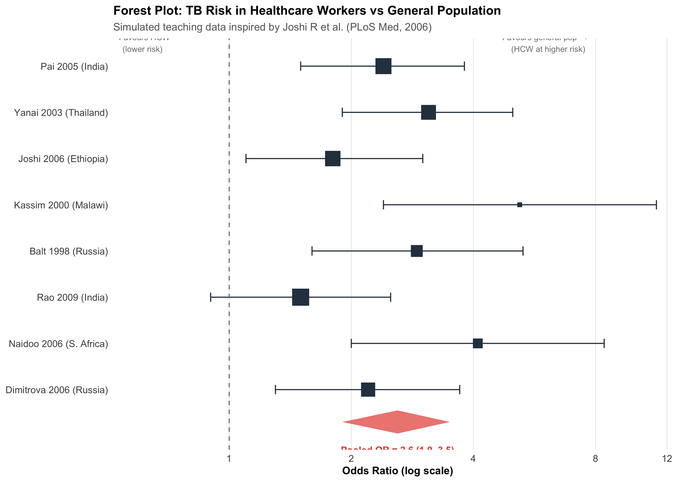
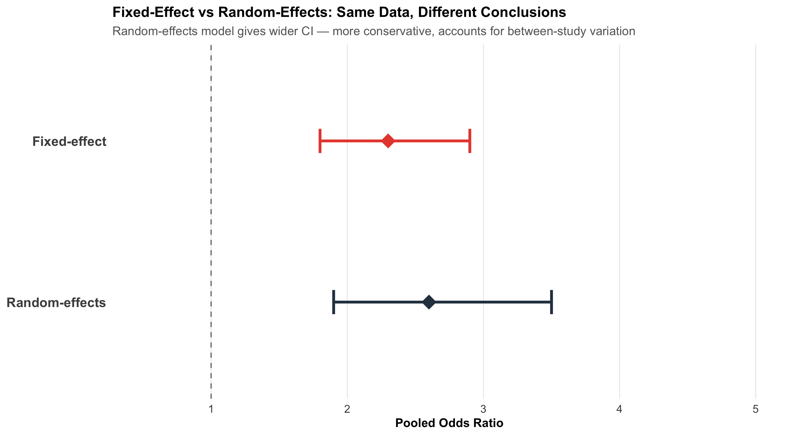
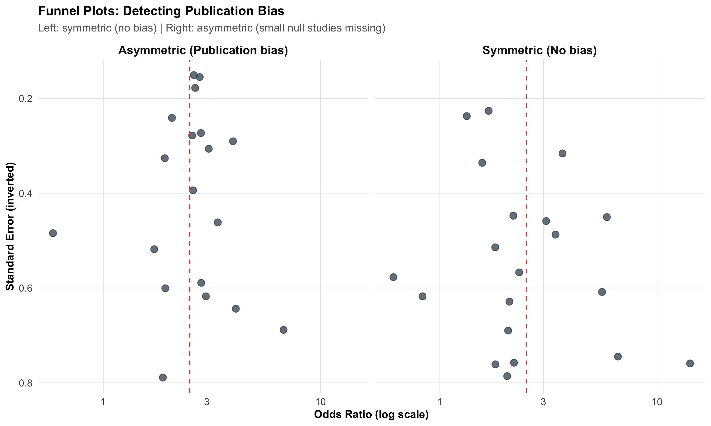
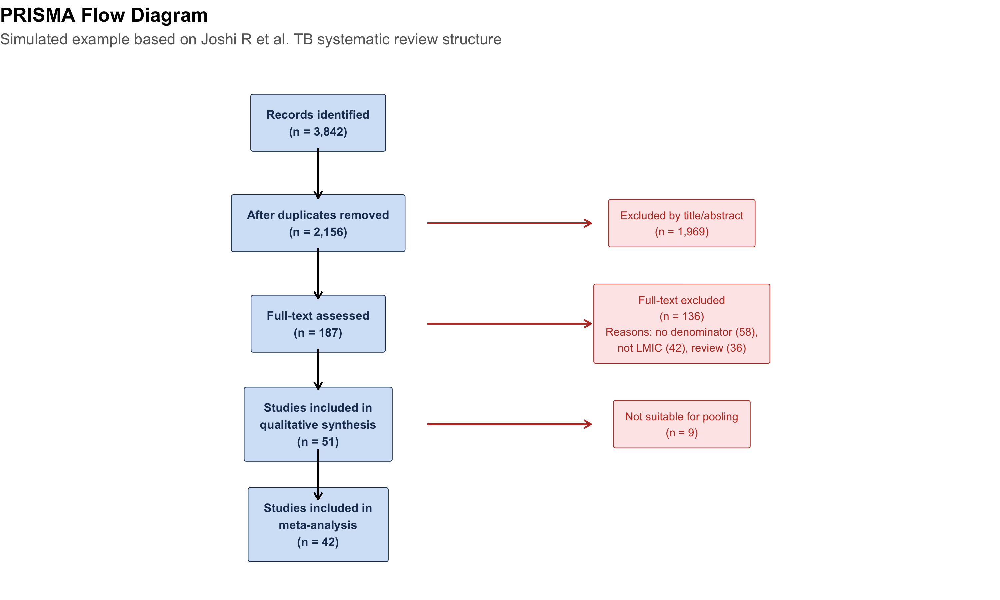

Distinguish systematic review from meta-analysis and explain why both matter
Read and interpret forest plots — point estimates, confidence intervals, weights, and pooled effects
Choose between fixed-effect and random-effects models based on heterogeneity
Calculate and interpret I² and explain what drives heterogeneity
Assess publication bias using funnel plots and Egger’s test
Evaluate the quality of evidence using the GRADE framework
Critically appraise meta-analyses using the PRISMA checklist
Recognise when meta-analysis is inappropriate
14.2 Clinical Hook
In 2006, Rajnish Joshi (now at AIIMS Bhopal) led a landmark systematic review in PLoS Medicine: “Tuberculosis among Health-Care Workers in Low- and Middle-Income Countries” (Joshi R, Reingold AL, Menzies D, Pai M).
The problem was clear: individual studies of TB risk in healthcare workers gave wildly different numbers — some reported LTBI prevalence of 33%, others 79%. Some found healthcare workers at 2× the risk of the general population, others at 5×. If you read just one study, you’d get one version of the truth. If you read another, you’d get a completely different picture.
The team identified 42 articles comprising 51 studies and synthesised the evidence. The pooled LTBI prevalence among healthcare workers was 54% (range 33–79%). The systematic review revealed not just the average risk, but why estimates varied — differences in TB burden, infection control measures, healthcare setting, and diagnostic method.
This is the power of meta-analysis: turning conflicting signals into a coherent picture.
Reference
Joshi R, Reingold AL, Menzies D, Pai M. Tuberculosis among Health-Care Workers in Low- and Middle-Income Countries: A Systematic Review. PLoS Med 2006;3(12):e494.
14.3 Part 1: Systematic Review vs Meta-Analysis
What’s the Difference?
Systematic Review
Meta-Analysis
What
A structured method for finding, appraising, and synthesising all available evidence
A statistical technique for combining results from multiple studies into a single pooled estimate
Nature
Qualitative (can exist without statistics)
Quantitative (requires numbers)
Can it stand alone?
Yes — a systematic review without meta-analysis is valid
No — a meta-analysis without systematic review is not credible
Output
Summary of evidence, quality assessment
Pooled effect size, forest plot, heterogeneity statistics
The Hierarchy
A meta-analysis is only as good as the systematic review that feeds it. If the search missed studies, or the included studies are biased, the pooled estimate inherits those problems. Garbage in, garbage out.
The PICO Framework
Every systematic review starts with a focused question structured as PICO:
Component
Meaning
Example (from Joshi et al.)
Population
Who?
Healthcare workers in LMICs
Intervention/Exposure
What?
Working in healthcare settings
Comparator
Compared to?
General population
Outcome
What do we measure?
Prevalence of LTBI and active TB
14.4 Part 2: The Forest Plot — The Most Important Figure in Evidence-Based Medicine
Anatomy of a Forest Plot
Code
# Simulated data inspired by TB in healthcare workers# These are teaching data, not from the actual Joshi et al. paperset.seed(42)studies<-tibble( study =c("Pai 2005 (India)", "Yanai 2003 (Thailand)", "Joshi 2006 (Ethiopia)","Kassim 2000 (Malawi)", "Balt 1998 (Russia)", "Rao 2009 (India)","Naidoo 2006 (S. Africa)", "Dimitrova 2006 (Russia)"), or =c(2.4, 3.1, 1.8, 5.2, 2.9, 1.5, 4.1, 2.2), or_lo =c(1.5, 1.9, 1.1, 2.4, 1.6, 0.9, 2.0, 1.3), or_hi =c(3.8, 5.0, 3.0, 11.3, 5.3, 2.5, 8.4, 3.7), weight =c(16, 14, 15, 6, 10, 18, 8, 13), n =c(720, 380, 520, 110, 240, 850, 190, 310))# Pooled estimate (random effects)pooled_or<-2.6pooled_lo<-1.9pooled_hi<-3.5# Plotstudies<-studies%>%mutate(study =fct_rev(fct_inorder(study)))ggplot(studies, aes(y =study))+# Individual studiesgeom_point(aes(x =or, size =weight), color ="#2c3e50", shape =15)+geom_errorbarh(aes(xmin =or_lo, xmax =or_hi), height =0.2, color ="#2c3e50")+# Pooled diamondannotate("polygon", x =c(pooled_lo, pooled_or, pooled_hi, pooled_or), y =c(0.3, 0.55, 0.3, 0.05), fill ="#e74c3c", alpha =0.7)+annotate("text", x =pooled_or, y =-0.3, label =paste0("Pooled OR = ", pooled_or," (", pooled_lo, "–", pooled_hi, ")"), fontface ="bold", size =3.5, color ="#e74c3c")+# Null linegeom_vline(xintercept =1, linetype ="dashed", color ="gray50")+# Labelsscale_x_log10(breaks =c(0.5, 1, 2, 4, 8, 12))+scale_size_continuous(range =c(2, 8), guide ="none")+labs(title ="Forest Plot: TB Risk in Healthcare Workers vs General Population", subtitle ="Simulated teaching data inspired by Joshi R et al. (PLoS Med, 2006)", x ="Odds Ratio (log scale)", y =NULL)+annotate("text", x =0.6, y =8.5, label ="← Favours HCW\n (lower risk)", size =3, color ="gray50")+annotate("text", x =6, y =8.5, label ="Favours general pop →\n (HCW at higher risk)", size =3, color ="gray50")+theme_clean()+theme(panel.grid.major.y =element_blank())

Reading the Forest Plot
Each row = one study:
Square = point estimate (odds ratio, risk ratio, or mean difference)
Horizontal line = 95% confidence interval
Square size = weight of the study (larger studies contribute more)
Bottom diamond = pooled estimate across all studies:
Centre = pooled effect size
Width = 95% CI of the pooled estimate
If the diamond doesn’t cross the vertical null line (OR = 1), the pooled effect is statistically significant
X-axis — Usually on a log scale for ratios (OR, RR, HR). This is important because:
On a log scale, OR = 0.5 and OR = 2.0 are equidistant from 1.0
The CI is symmetric on the log scale, even though it’s asymmetric on the natural scale
14.5 Part 3: Fixed-Effect vs Random-Effects Models
The Key Question: Is There One True Effect?
Fixed-Effect
Random-Effects
Assumption
All studies estimate the same true effect
Each study estimates a different true effect drawn from a distribution
Variation between studies
Due to sampling error only
Due to sampling error + real differences between studies
CI width
Narrower
Wider (more conservative)
Weighting
Proportional to study size (inverse variance)
More balanced — small studies get relatively more weight
Use when
Studies are very similar; I² < 25%
Studies are diverse; I² ≥ 50%
Visualising the Difference
Code
# Same data, two pooled estimatesfe_or<-2.3; fe_lo<-1.8; fe_hi<-2.9re_or<-2.6; re_lo<-1.9; re_hi<-3.5comp_df<-tibble( model =c("Fixed-effect", "Random-effects"), or =c(fe_or, re_or), lo =c(fe_lo, re_lo), hi =c(fe_hi, re_hi))%>%mutate(model =fct_rev(fct_inorder(model)))ggplot(comp_df, aes(y =model))+geom_point(aes(x =or), size =6, shape =18, color =c("#e74c3c", "#2c3e50"))+geom_errorbarh(aes(xmin =lo, xmax =hi), height =0.15, color =c("#e74c3c", "#2c3e50"), linewidth =1.2)+geom_vline(xintercept =1, linetype ="dashed", color ="gray50")+scale_x_continuous(limits =c(0.5, 5), breaks =1:5)+labs(title ="Fixed-Effect vs Random-Effects: Same Data, Different Conclusions", subtitle ="Random-effects model gives wider CI — more conservative, accounts for between-study variation", x ="Pooled Odds Ratio", y =NULL)+theme_clean()+theme(panel.grid.major.y =element_blank(), axis.text.y =element_text(size =12, face ="bold"))

Practical Rule
When in doubt, use random-effects. It’s the safer default because it accounts for between-study heterogeneity. If heterogeneity is truly zero, random-effects and fixed-effect give identical results anyway.
14.6 Part 4: Heterogeneity — Why Studies Disagree
The I² Statistic
Heterogeneity measures how much the effect sizes vary beyond what chance alone would explain.
\[I^2 = \frac{Q - df}{Q} \times 100\%\]
where Q is Cochran’s chi-squared test statistic and df = number of studies − 1.
I² value
Interpretation
0–25%
Low heterogeneity — studies agree well
25–50%
Moderate — some differences
50–75%
Substantial — results vary considerably
> 75%
Considerable — studies may be too different to pool
A Real Example: OSA Prevalence in India
A systematic review and meta-analysis of obstructive sleep apnoea (OSA) prevalence in Indian adults pooled 8 studies comprising 11,009 subjects. The results:
Pooled OSA prevalence (AHI ≥ 5): 11% (95% CI: 7–15%)
I² = 98% — massive heterogeneity
Meanwhile, the BLESS cohort from AIIMS Bhopal (Pakhare, Joshi A et al., 2024) — a single well-conducted study using Level I polysomnography on 958 participants — found moderate-severe OSA prevalence of 30.5%.
Why the enormous difference?
Code
# Simulated data inspired by OSA meta-analysisosa_studies<-tibble( study =c("Sharma 2006", "Udwadia 2004", "Reddy 2009", "Puri 2015","Kale 2018", "Suri 2008", "Bhatia 2017", "BLESS 2024*"), prev =c(4.9, 7.5, 3.6, 13.7, 9.3, 19.5, 8.2, 30.5), lo =c(2.1, 4.2, 1.8, 9.1, 5.8, 12.3, 5.0, 27.6), hi =c(7.7, 10.8, 5.4, 18.3, 12.8, 26.7, 11.4, 33.4), method =c("Questionnaire", "PSG (clinic)", "Questionnaire", "PSG (clinic)","Questionnaire", "PSG (clinic)", "Questionnaire", "PSG (population)"), n =c(2100, 658, 1800, 420, 1500, 315, 2200, 958))%>%mutate(study =fct_rev(fct_inorder(study)))ggplot(osa_studies, aes(y =study))+geom_point(aes(x =prev, color =method, size =n), shape =15)+geom_errorbarh(aes(xmin =lo, xmax =hi, color =method), height =0.2)+scale_color_manual(values =c("Questionnaire"="#7f8c8d", "PSG (clinic)"="#3498db","PSG (population)"="#e74c3c"))+scale_size_continuous(range =c(3, 7), guide ="none")+labs(title ="OSA Prevalence Across Indian Studies — Why I² = 98%", subtitle ="Simulated teaching data inspired by published meta-analysis and BLESS cohort", x ="Prevalence (%)", y =NULL, color ="Diagnostic method")+theme_clean()+theme(panel.grid.major.y =element_blank(), legend.position ="right")
Age and BMI — Older, heavier populations have more OSA
Scoring rules — AASM 2007 vs AASM 2012 criteria
Reference
Pakhare A, Joshi A, et al. Prevalence and association analysis of obstructive sleep apnea in India: Results from BLESS cohort. Sleep Med 2024.
When I² Is Very High
When I² exceeds 75%, seriously question whether pooling is meaningful. A single “average” prevalence of 11% obscures the reality that different methods give vastly different answers. Subgroup analysis (by diagnostic method, population type) is far more informative than a single pooled number.
14.7 Part 5: Exploring Heterogeneity — Subgroup Analysis and Meta-Regression
Subgroup Analysis
When I² is high, stratify by a study-level characteristic to see if heterogeneity is explained.
The diagnostic method explains much of the heterogeneity: questionnaire studies consistently give lower estimates than PSG studies. This is clinically meaningful — it tells us that the tool we use to measure OSA dramatically affects what we find.
Meta-Regression
Meta-regression extends this idea to continuous study-level variables. For example: does mean BMI of the study population predict the effect size?
Subgroup analyses should be pre-specified in the protocol, not discovered post-hoc
With only 8 studies, you have very limited power for meta-regression
Ecological fallacy — a study-level association (higher mean BMI → higher prevalence) does not prove the association holds at the individual level
14.8 Part 6: Publication Bias — The Missing Studies Problem
Why It Matters
Studies with statistically significant, positive results are more likely to be published. Studies with null findings end up in file drawers. If your meta-analysis only includes published studies, the pooled estimate is biased upward.
The Funnel Plot
A funnel plot shows effect size (x-axis) vs study precision (y-axis, often standard error or 1/SE):
Code
# Simulated funnel plot dataset.seed(42)# Symmetric (no bias)n_studies<-20true_effect<-log(2.5)# log ORse_sym<-runif(n_studies, 0.15, 0.8)effect_sym<-rnorm(n_studies, true_effect, se_sym)funnel_sym<-tibble(effect =effect_sym, se =se_sym, type ="Symmetric (No bias)")# Asymmetric (publication bias)se_asym<-runif(n_studies, 0.15, 0.8)effect_asym<-rnorm(n_studies, true_effect, se_asym)# Remove small studies near nullkeep<-!(se_asym>0.5&effect_asym<log(1.5))funnel_asym<-tibble(effect =effect_asym[keep], se =se_asym[keep], type ="Asymmetric (Publication bias)")funnel_data<-bind_rows(funnel_sym, funnel_asym)ggplot(funnel_data, aes(x =exp(effect), y =se))+geom_point(size =3, color ="#2c3e50", alpha =0.7)+geom_vline(xintercept =exp(true_effect), linetype ="dashed", color ="#e74c3c")+scale_y_reverse()+scale_x_log10()+facet_wrap(~type)+labs(title ="Funnel Plots: Detecting Publication Bias", subtitle ="Left: symmetric (no bias) | Right: asymmetric (small null studies missing)", x ="Odds Ratio (log scale)", y ="Standard Error (inverted)")+theme_clean()+theme(strip.text =element_text(face ="bold", size =12))

How to read it:
Symmetric funnel → no obvious publication bias; small studies scatter equally on both sides of the pooled estimate
Asymmetric funnel (gap in the bottom-left) → small studies with null results are missing — suggests publication bias
Egger’s test provides a statistical test for asymmetry (p < 0.05 suggests bias), but has low power with fewer than 10 studies
Beyond Publication Bias
Funnel plot asymmetry doesn’t always mean publication bias. Other causes include:
True heterogeneity — small studies done in different populations
Methodological quality — small studies may be lower quality with inflated effects
Chance — with few studies, asymmetry can occur randomly
14.9 Part 7: Risk of Bias in Individual Studies
Cochrane Risk of Bias Tool (RoB 2)
For RCTs, the Cochrane RoB 2 tool assesses five domains:
Code
rob<-tibble( Domain =c("Randomisation process", "Deviations from intended intervention","Missing outcome data", "Measurement of outcome","Selection of reported result"), `What can go wrong` =c("Inadequate sequence generation or allocation concealment","Unblinded participants or clinicians change behaviour","Differential dropout between groups","Assessor knows group assignment; subjective outcome","Authors report the 'best' outcome or time point"), `Example from AIIMS Bhopal` =c("Mw COVID trial: were allocation envelopes opaque?","Open-label: clinicians knew who got Mw","ICU transfers counted as censored or excluded?","Mortality is objective; less prone to bias","Primary vs secondary outcomes reported selectively?"))kable(rob, format ="html")%>%kable_styling(full_width =TRUE, font_size =13)%>%row_spec(0, background ="#2c3e50", color ="white", bold =TRUE)%>%column_spec(1, bold =TRUE, width ="22%")
Domain
What can go wrong
Example from AIIMS Bhopal
Randomisation process
Inadequate sequence generation or allocation concealment
Mw COVID trial: were allocation envelopes opaque?
Deviations from intended intervention
Unblinded participants or clinicians change behaviour
Open-label: clinicians knew who got Mw
Missing outcome data
Differential dropout between groups
ICU transfers counted as censored or excluded?
Measurement of outcome
Assessor knows group assignment; subjective outcome
Mortality is objective; less prone to bias
Selection of reported result
Authors report the 'best' outcome or time point
Primary vs secondary outcomes reported selectively?
Traffic Light System
Each domain is rated as Low risk (green), Some concerns (yellow), or High risk (red). A study with high risk in even one critical domain can seriously bias the meta-analysis. Sensitivity analysis excluding high-risk studies tests robustness.
14.10 Part 8: The GRADE Framework — Grading the Evidence
GRADE (Grading of Recommendations Assessment, Development and Evaluation) assesses the overall quality of evidence across all studies for a given outcome.
Starting Point and Modifiers
Code
grade<-tibble( ` ` =c("Starting quality", "", "Downgrade for:", "", "", "", "","Upgrade for (observational):", "", ""), Factor =c("RCTs", "Observational studies","Risk of bias", "Inconsistency (heterogeneity)","Indirectness", "Imprecision", "Publication bias","Large effect", "Dose-response", "Confounders would reduce effect"), Rating =c("High (⊕⊕⊕⊕)", "Low (⊕⊕○○)","−1 or −2", "−1 or −2", "−1 or −2", "−1 or −2", "−1 or −2","+1 or +2", "+1", "+1"))kable(grade, format ="html", align =c("l", "l", "c"))%>%kable_styling(full_width =FALSE, font_size =13)%>%row_spec(0, background ="#2c3e50", color ="white", bold =TRUE)
Factor
Rating
Starting quality
RCTs
High (⊕⊕⊕⊕)
Observational studies
Low (⊕⊕○○)
Downgrade for:
Risk of bias
−1 or −2
Inconsistency (heterogeneity)
−1 or −2
Indirectness
−1 or −2
Imprecision
−1 or −2
Publication bias
−1 or −2
Upgrade for (observational):
Large effect
+1 or +2
Dose-response
+1
Confounders would reduce effect
+1
Final quality ratings:
Rating
Meaning
High (⊕⊕⊕⊕)
Very confident the true effect lies close to the estimate
Moderate (⊕⊕⊕○)
Moderately confident; further research may change the estimate
Low (⊕⊕○○)
Limited confidence; further research is very likely to change
Very low (⊕○○○)
Very little confidence in the estimate
14.11 Part 9: The PRISMA Checklist — Transparent Reporting
The PRISMA (Preferred Reporting Items for Systematic Reviews and Meta-Analyses) statement is a 27-item checklist ensuring transparent reporting. When reading or writing a meta-analysis, check:
# Simple PRISMA-like flowprisma_df<-tibble( x =c(5, 5, 5, 5, 5, 9, 9, 9), y =c(10, 8, 6, 4, 2, 8, 6, 4), label =c("Records identified\n(n = 3,842)","After duplicates removed\n(n = 2,156)","Full-text assessed\n(n = 187)","Studies included in\nqualitative synthesis\n(n = 51)","Studies included in\nmeta-analysis\n(n = 42)","Excluded by title/abstract\n(n = 1,969)","Full-text excluded\n(n = 136)\nReasons: no denominator (58),\nnot LMIC (42), review (36)","Not suitable for pooling\n(n = 9)"), box =c(TRUE, TRUE, TRUE, TRUE, TRUE, FALSE, FALSE, FALSE))ggplot(prisma_df)+# Boxesgeom_label(data =prisma_df%>%filter(box),aes(x =x, y =y, label =label), fill ="#d4e4f7", color ="#1e3a5f", size =3, fontface ="bold", label.padding =unit(0.4, "cm"))+# Exclusion boxesgeom_label(data =prisma_df%>%filter(!box),aes(x =x, y =y, label =label), fill ="#fde8e8", color ="#c0392b", size =2.8, label.padding =unit(0.3, "cm"))+# Arrowsgeom_segment(aes(x =5, xend =5, y =9.5, yend =8.5), arrow =arrow(length =unit(0.2, "cm")))+geom_segment(aes(x =5, xend =5, y =7.5, yend =6.5), arrow =arrow(length =unit(0.2, "cm")))+geom_segment(aes(x =5, xend =5, y =5.5, yend =4.7), arrow =arrow(length =unit(0.2, "cm")))+geom_segment(aes(x =5, xend =5, y =3.5, yend =2.5), arrow =arrow(length =unit(0.2, "cm")))+# Exclusion arrowsgeom_segment(aes(x =6.2, xend =8, y =8, yend =8), arrow =arrow(length =unit(0.2, "cm")), color ="#c0392b")+geom_segment(aes(x =6.2, xend =8, y =6, yend =6), arrow =arrow(length =unit(0.2, "cm")), color ="#c0392b")+geom_segment(aes(x =6.2, xend =8, y =4, yend =4), arrow =arrow(length =unit(0.2, "cm")), color ="#c0392b")+xlim(2, 12)+ylim(1, 11)+labs(title ="PRISMA Flow Diagram", subtitle ="Simulated example based on Joshi R et al. TB systematic review structure")+theme_void()+theme(plot.title =element_text(face ="bold", size =14), plot.subtitle =element_text(size =11, color ="gray40"))

14.12 Part 10: When NOT to Do a Meta-Analysis
Not all collections of studies should be pooled. Meta-analysis is inappropriate when:
Red Flags Against Pooling
Extreme clinical heterogeneity — Studies compare fundamentally different interventions, populations, or outcomes (apples and oranges)
Very high I² with no identifiable source — If you can’t explain why studies disagree, an average is meaningless
Only 2–3 studies — Too few to estimate heterogeneity reliably; narrative synthesis is better
High risk of bias in most studies — Pooling biased estimates gives a precise but wrong answer
Different outcome measures — Unless you use standardised mean difference (SMD), you can’t combine different scales
Contradictory results with plausible reasons — If Study A (high-dose) shows benefit and Study B (low-dose) shows harm, the average is clinically meaningless
A Teaching Example: Pralidoxime in Organophosphorus Poisoning
Rajnish Joshi was a co-investigator on a landmark double-blind placebo-controlled RCT of pralidoxime (2-PAM) for organophosphorus poisoning in Sri Lanka (Eddleston et al., PLoS Medicine 2009, n = 235).
The result shocked the clinical community: pralidoxime-treated patients had higher mortality (24.8% vs 15.8%; adjusted HR = 1.69, 95% CI 0.88–3.26).
This contradicted earlier observational studies and smaller trials that suggested benefit. Why the discrepancy?
Earlier studies were unblinded, with selection bias (sicker patients may have been more likely to receive pralidoxime)
The RCT was adequately powered, double-blind, and placebo-controlled
A meta-analysis pooling the RCT with weaker studies would dilute the RCT’s signal with lower-quality evidence
Lesson
Not all evidence deserves equal weight. A well-conducted RCT can overturn a meta-analysis of biased observational studies. This is why risk of bias assessment and GRADE are essential — they prevent us from being fooled by a large number of weak studies.
Reference
Eddleston M, Eyer P, Worek F, … Joshi R, … Dawson AH. Pralidoxime in Acute Organophosphorus Insecticide Poisoning—A Randomised Controlled Trial. PLoS Med 2009;6(6):e1000104.
14.13 Part 11: Sensitivity Analysis — Testing Robustness
A good meta-analysis doesn’t just report one result. It asks: does the conclusion change if we make different assumptions?
Common sensitivity analyses:
Analysis
What you change
What it tests
Exclude high-RoB studies
Drop studies rated “high risk”
Is the effect driven by biased studies?
Fixed vs random effects
Switch the model
Does between-study variation matter?
Leave-one-out
Remove each study in turn
Is one study driving the result?
Restrict to RCTs only
Drop observational studies
Is the effect consistent in stronger designs?
Trim-and-fill
Impute missing studies
How much might publication bias affect the result?
If the pooled estimate changes substantially across these analyses, the conclusion is not robust — report this transparently.
14.14 Part 12: Summary and Key Takeaways
Important
Core Concepts:
Concept
Key Point
Systematic review
Structured search, appraisal, and synthesis of all evidence
Meta-analysis
Statistical pooling of effect sizes from multiple studies
Forest plot
Visual display: squares (studies), diamond (pooled), line at null
Fixed-effect
One true effect; variation = sampling error only
Random-effects
Distribution of true effects; accounts for between-study variation
I²
% of variation beyond chance; > 50% = substantial heterogeneity
Funnel plot
Detects publication bias; asymmetry = missing small studies
GRADE
Rates overall evidence quality (high → very low)
PRISMA
27-item checklist for transparent reporting
Tip
Practical rules:
Systematic review first, meta-analysis second — never pool without a structured search
Random-effects is the safer default when heterogeneity is uncertain
I² > 75% — stop and investigate before pooling; subgroup analysis first
Always check the funnel plot — even for well-conducted reviews
GRADE the evidence — a statistically significant pooled effect from low-quality studies is not compelling
Sensitivity analysis is not optional — test robustness by varying assumptions
A single strong RCT can be more informative than a meta-analysis of many weak studies
14.15 Practice Questions: NEET PG Style MCQs
Q1: Reading a Forest Plot
A meta-analysis forest plot shows 6 studies. The pooled odds ratio diamond is centred at 1.35 with 95% CI 0.98–1.84. The I² is reported as 22%. Which interpretation is correct?
Code
make_mcq( id ="m13q1", question ="Pooled OR = 1.35 (95% CI: 0.98–1.84), I² = 22%. Interpretation?", options =c("The treatment significantly increases the odds of the outcome by 35%"="Wrong — the 95% CI crosses 1.0 (0.98–1.84), so the pooled effect is NOT statistically significant at the 5% level.","answer:There is a trend toward increased odds (35%), but the CI includes 1.0, so the result is not statistically significant. Low heterogeneity suggests studies are reasonably consistent."="Correct! The CI crosses 1.0, meaning we cannot exclude no effect. I² = 22% indicates low heterogeneity — studies agree on the direction, but the overall evidence is imprecise.","I² = 22% means 22% of studies showed a significant effect"="Wrong — I² measures the percentage of variation in effect sizes due to heterogeneity, not the percentage of studies with significant results.","The result is invalid because I² should be 0% for a valid meta-analysis"="Wrong — I² = 0% is ideal but not required. Low heterogeneity (22%) is acceptable and suggests a fixed-effect model could be used."))
Pooled OR = 1.35 (95% CI: 0.98–1.84), I² = 22%. Interpretation?
✘ A. The treatment significantly increases the odds of the outcome by 35% — Wrong — the 95% CI crosses 1.0 (0.98–1.84), so the pooled effect is NOT statistically significant at the 5% level.
✔ B. There is a trend toward increased odds (35%), but the CI includes 1.0, so the result is not statistically significant. Low heterogeneity suggests studies are reasonably consistent. — Correct! The CI crosses 1.0, meaning we cannot exclude no effect. I² = 22% indicates low heterogeneity — studies agree on the direction, but the overall evidence is imprecise.
✘ C. I² = 22% means 22% of studies showed a significant effect — Wrong — I² measures the percentage of variation in effect sizes due to heterogeneity, not the percentage of studies with significant results.
✘ D. The result is invalid because I² should be 0% for a valid meta-analysis — Wrong — I² = 0% is ideal but not required. Low heterogeneity (22%) is acceptable and suggests a fixed-effect model could be used.
Q2: Fixed vs Random Effects
A meta-analysis of 12 studies on antihypertensive efficacy uses a random-effects model. A colleague argues the fixed-effect model gives a more significant result (narrower CI). Should the authors switch?
Code
make_mcq( id ="m13q2", question ="Random-effects gives wider CI. Colleague says switch to fixed-effect for 'better' results. Should they?", options =c("Yes — a more significant result is always better"="Wrong — choosing the model that gives the 'desired' result is p-hacking. The model should be chosen based on the heterogeneity assessment and pre-specified in the protocol.","Yes — fixed-effect is always the correct model"="Wrong — fixed-effect assumes all studies estimate the same true effect. With 12 diverse studies, this assumption is unlikely to hold.","answer:No — the model choice should be based on heterogeneity assessment and pre-specified in the protocol, not chosen to achieve significance"="Correct! Model selection should be driven by the I² statistic and clinical reasoning about whether studies are homogeneous. Switching models to get a 'better' p-value is a form of selective reporting.","No — random-effects is always the correct model"="Partially right in practice (random-effects is the safer default), but the reasoning is wrong. The choice depends on heterogeneity. If I² = 0%, fixed-effect is perfectly valid."))
Random-effects gives wider CI. Colleague says switch to fixed-effect for ‘better’ results. Should they?
✘ A. Yes — a more significant result is always better — Wrong — choosing the model that gives the ‘desired’ result is p-hacking. The model should be chosen based on the heterogeneity assessment and pre-specified in the protocol.
✘ B. Yes — fixed-effect is always the correct model — Wrong — fixed-effect assumes all studies estimate the same true effect. With 12 diverse studies, this assumption is unlikely to hold.
✔ C. No — the model choice should be based on heterogeneity assessment and pre-specified in the protocol, not chosen to achieve significance — Correct! Model selection should be driven by the I² statistic and clinical reasoning about whether studies are homogeneous. Switching models to get a ‘better’ p-value is a form of selective reporting.
✘ D. No — random-effects is always the correct model — Partially right in practice (random-effects is the safer default), but the reasoning is wrong. The choice depends on heterogeneity. If I² = 0%, fixed-effect is perfectly valid.
Q3: Heterogeneity
A meta-analysis of OSA prevalence in India reports I² = 98%. The authors pool all studies and report a single prevalence of 11%. What is the main criticism?
Code
make_mcq( id ="m13q3", question ="I² = 98% in OSA prevalence meta-analysis. Authors report pooled prevalence of 11%. Main criticism?", options =c("The sample size is too small"="Wrong — 11,009 subjects across 8 studies is a reasonable sample. The problem is not sample size but heterogeneity.","answer:With I² = 98%, studies are far too heterogeneous to pool meaningfully; a single average prevalence is misleading and subgroup analysis by diagnostic method is essential"="Correct! I² = 98% means virtually all variation is due to real differences between studies. Pooling gives a number (11%) that doesn't represent any actual population. Subgroup analysis (questionnaire vs PSG, clinic vs community) is far more informative.","They should use fixed-effect instead of random-effects"="Wrong — switching to fixed-effect with I² = 98% would give an even more misleading pooled estimate with falsely narrow CI.","I² = 98% means 98% of studies are biased"="Wrong — I² measures heterogeneity (variation in true effects), not bias. Studies can be high quality but still have different true effects because of different methods or populations."))
I² = 98% in OSA prevalence meta-analysis. Authors report pooled prevalence of 11%. Main criticism?
✘ A. The sample size is too small — Wrong — 11,009 subjects across 8 studies is a reasonable sample. The problem is not sample size but heterogeneity.
✔ B. With I² = 98%, studies are far too heterogeneous to pool meaningfully; a single average prevalence is misleading and subgroup analysis by diagnostic method is essential — Correct! I² = 98% means virtually all variation is due to real differences between studies. Pooling gives a number (11%) that doesn’t represent any actual population. Subgroup analysis (questionnaire vs PSG, clinic vs community) is far more informative.
✘ C. They should use fixed-effect instead of random-effects — Wrong — switching to fixed-effect with I² = 98% would give an even more misleading pooled estimate with falsely narrow CI.
✘ D. I² = 98% means 98% of studies are biased — Wrong — I² measures heterogeneity (variation in true effects), not bias. Studies can be high quality but still have different true effects because of different methods or populations.
Q4: Publication Bias
A funnel plot for a meta-analysis of 15 studies shows a clear gap in the bottom-left corner (small studies with effects near the null are missing). What is the most likely explanation?
Code
make_mcq( id ="m13q4", question ="Funnel plot shows gap in bottom-left (missing small null studies). Most likely explanation?", options =c("The meta-analysis included too many studies"="Wrong — having 15 studies is actually good for funnel plot assessment. The asymmetry suggests a systematic problem with the evidence base.","answer:Publication bias — small studies with null or negative results were less likely to be published"="Correct! This is the classic signature of publication bias. Small studies with impressive results get published; small studies with null results end up in file drawers. This inflates the pooled estimate.","All small studies are biased"="Wrong — small studies aren't inherently biased. The issue is that only the small studies with positive results got published, creating a skewed evidence base.","The random-effects model is incorrect"="Wrong — funnel plot asymmetry reflects a problem with the evidence base, not the statistical model. Switching models won't fix missing studies."))
Funnel plot shows gap in bottom-left (missing small null studies). Most likely explanation?
✘ A. The meta-analysis included too many studies — Wrong — having 15 studies is actually good for funnel plot assessment. The asymmetry suggests a systematic problem with the evidence base.
✔ B. Publication bias — small studies with null or negative results were less likely to be published — Correct! This is the classic signature of publication bias. Small studies with impressive results get published; small studies with null results end up in file drawers. This inflates the pooled estimate.
✘ C. All small studies are biased — Wrong — small studies aren’t inherently biased. The issue is that only the small studies with positive results got published, creating a skewed evidence base.
✘ D. The random-effects model is incorrect — Wrong — funnel plot asymmetry reflects a problem with the evidence base, not the statistical model. Switching models won’t fix missing studies.
Q5: GRADE Assessment
A meta-analysis of 4 RCTs for a new TB drug yields: pooled RR = 0.65 (95% CI: 0.48–0.88), I² = 15%. However, two RCTs are unblinded and have high risk of performance bias. What GRADE rating is most appropriate?
Code
make_mcq( id ="m13q5", question ="4 RCTs, pooled RR = 0.65 (0.48–0.88), I² = 15%. Two RCTs have high risk of bias. GRADE rating?", options =c("High — because the CI excludes 1.0 and heterogeneity is low"="Wrong — GRADE starts at 'high' for RCTs but downgrades for risk of bias. Two of four RCTs having high RoB warrants a downgrade.","answer:Moderate — starts at 'high' (RCTs), downgraded one level for risk of bias in half the evidence"="Correct! RCTs start at 'high'. With 2/4 studies having serious risk of bias, downgrade by 1 (to 'moderate'). No further downgrade needed: heterogeneity is low (I² = 15%), the CI is reasonably precise, and the outcome is direct.","Low — because some RCTs are biased, we cannot trust any of the evidence"="Wrong — this over-downgrades. Only half the studies have high RoB, and the overall I² is low. A single downgrade is appropriate.","Very low — any risk of bias in an RCT makes the evidence unreliable"="Wrong — GRADE is nuanced. A single concern typically warrants a one-level downgrade, not a catastrophic downgrade to 'very low'."))
4 RCTs, pooled RR = 0.65 (0.48–0.88), I² = 15%. Two RCTs have high risk of bias. GRADE rating?
✘ A. High — because the CI excludes 1.0 and heterogeneity is low — Wrong — GRADE starts at ‘high’ for RCTs but downgrades for risk of bias. Two of four RCTs having high RoB warrants a downgrade.
✔ B. Moderate — starts at ‘high’ (RCTs), downgraded one level for risk of bias in half the evidence — Correct! RCTs start at ‘high’. With 2/4 studies having serious risk of bias, downgrade by 1 (to ‘moderate’). No further downgrade needed: heterogeneity is low (I² = 15%), the CI is reasonably precise, and the outcome is direct.
✘ C. Low — because some RCTs are biased, we cannot trust any of the evidence — Wrong — this over-downgrades. Only half the studies have high RoB, and the overall I² is low. A single downgrade is appropriate.
✘ D. Very low — any risk of bias in an RCT makes the evidence unreliable — Wrong — GRADE is nuanced. A single concern typically warrants a one-level downgrade, not a catastrophic downgrade to ‘very low’.
Q6: When Not to Pool
An investigator finds 3 studies on vitamin D for preventing respiratory infections: Study A (elderly nursing home, high-dose, RR = 0.58), Study B (children in daycare, low-dose, RR = 1.12), and Study C (adults with COPD, moderate dose, RR = 0.85). She wants to meta-analyse them. What is the best advice?
Code
make_mcq( id ="m13q6", question ="3 studies: different populations (elderly, children, COPD), different doses, different effects. Should they be pooled?", options =c("Yes — all three study vitamin D and respiratory infections, so they address the same question"="Wrong — the populations (elderly, children, COPD patients), doses (high, low, moderate), and settings are fundamentally different. A pooled estimate would be an average of incomparable things.","Yes — but use random-effects to account for the differences"="Wrong — random-effects accounts for statistical heterogeneity, but cannot fix clinical heterogeneity. If the studies are asking different clinical questions, pooling gives a meaningless average.","answer:No — the populations, doses, and settings are too heterogeneous; a narrative synthesis describing each study's findings in context is more appropriate"="Correct! With only 3 studies and major clinical heterogeneity (different ages, doses, populations), a meta-analysis would give a pooled estimate that applies to no real clinical scenario. A narrative systematic review is more informative.","No — because one study shows harm (RR > 1)"="Wrong reasoning — contradictory results alone don't preclude meta-analysis (that's actually when it can be most useful). The problem here is clinical heterogeneity, not contradictory results."))
3 studies: different populations (elderly, children, COPD), different doses, different effects. Should they be pooled?
✘ A. Yes — all three study vitamin D and respiratory infections, so they address the same question — Wrong — the populations (elderly, children, COPD patients), doses (high, low, moderate), and settings are fundamentally different. A pooled estimate would be an average of incomparable things.
✘ B. Yes — but use random-effects to account for the differences — Wrong — random-effects accounts for statistical heterogeneity, but cannot fix clinical heterogeneity. If the studies are asking different clinical questions, pooling gives a meaningless average.
✔ C. No — the populations, doses, and settings are too heterogeneous; a narrative synthesis describing each study’s findings in context is more appropriate — Correct! With only 3 studies and major clinical heterogeneity (different ages, doses, populations), a meta-analysis would give a pooled estimate that applies to no real clinical scenario. A narrative systematic review is more informative.
✘ D. No — because one study shows harm (RR > 1) — Wrong reasoning — contradictory results alone don’t preclude meta-analysis (that’s actually when it can be most useful). The problem here is clinical heterogeneity, not contradictory results.
14.16 Further Learning
Recommended Resources
Textbooks:
Higgins JPT, Thomas J, et al. Cochrane Handbook for Systematic Reviews of Interventions — free online at training.cochrane.org
Borenstein M, Hedges LV, et al. Introduction to Meta-Analysis — excellent conceptual introduction
Videos:
StatQuest with Josh Starmer — Meta-Analysis and Forest Plots (clear visual explanations)
Joshi R, Reingold AL, Menzies D, Pai M (2006) — TB in healthcare workers: systematic review
Eddleston M, … Joshi R, … (2009) — Pralidoxime RCT that challenged conventional wisdom
Pakhare A, Joshi A et al. (2024) — BLESS cohort: single high-quality study vs pooled estimates
14.17 References
Source Code
---title: "Meta-Analysis and Evidence Synthesis"subtitle: "Combining Evidence from Multiple Studies"description: | Learn to synthesize evidence across studies using systematic review and meta-analysis. Understand forest plots, fixed vs random effects models, heterogeneity (I²), funnel plots, and publication bias. Real examples from AIIMS Bhopal research on TB, sleep apnoea, and sepsis.categories: - Biostatistics - Meta-Analysis - Systematic Review - Evidence Synthesis - Heterogeneityauthor: "AIIMS Bhopal Biostatistics Course"date: "`r Sys.Date()`"---```{r}#| label: setup#| include: falselibrary(tidyverse)library(kableExtra)source("../R/mcq.R")library(patchwork)library(scales)set.seed(42)theme_clean <-function() {theme_minimal(base_size =12) +theme(plot.title =element_text(face ="bold", size =13),plot.subtitle =element_text(size =11, color ="gray40"),panel.grid.minor =element_blank(),panel.grid.major =element_line(color ="gray90", linewidth =0.3),axis.text =element_text(size =10),axis.title =element_text(size =11, face ="bold"),legend.position ="bottom",legend.title =element_text(face ="bold") )}```::: {.callout-note appearance="minimal"}**Lecture slides for this module:** [Open Slides](../slides/13-meta-analysis-slides.html){target="_blank"}:::## Learning Objectives {#learning-objectives}By the end of this module, you will be able to:1. **Distinguish** systematic review from meta-analysis and explain why both matter2. **Read and interpret** forest plots — point estimates, confidence intervals, weights, and pooled effects3. **Choose** between fixed-effect and random-effects models based on heterogeneity4. **Calculate and interpret** I² and explain what drives heterogeneity5. **Assess** publication bias using funnel plots and Egger's test6. **Evaluate** the quality of evidence using the GRADE framework7. **Critically appraise** meta-analyses using the PRISMA checklist8. **Recognise** when meta-analysis is inappropriate---## Clinical HookIn 2006, **Rajnish Joshi** (now at AIIMS Bhopal) led a landmark systematic review in *PLoS Medicine*: **"Tuberculosis among Health-Care Workers in Low- and Middle-Income Countries"** (Joshi R, Reingold AL, Menzies D, Pai M).The problem was clear: individual studies of TB risk in healthcare workers gave wildly different numbers — some reported LTBI prevalence of 33%, others 79%. Some found healthcare workers at 2× the risk of the general population, others at 5×. If you read just one study, you'd get one version of the truth. If you read another, you'd get a completely different picture.The team identified **42 articles** comprising **51 studies** and synthesised the evidence. The pooled LTBI prevalence among healthcare workers was **54%** (range 33–79%). The systematic review revealed not just the average risk, but *why* estimates varied — differences in TB burden, infection control measures, healthcare setting, and diagnostic method.This is the power of meta-analysis: **turning conflicting signals into a coherent picture**.::: {.callout-note title="Reference"}Joshi R, Reingold AL, Menzies D, Pai M. Tuberculosis among Health-Care Workers in Low- and Middle-Income Countries: A Systematic Review. *PLoS Med* 2006;3(12):e494.:::---## Part 1: Systematic Review vs Meta-Analysis### What's the Difference?|| Systematic Review | Meta-Analysis ||---|---|---|| **What** | A structured method for finding, appraising, and synthesising *all* available evidence | A statistical technique for combining results from multiple studies into a single pooled estimate || **Nature** | Qualitative (can exist without statistics) | Quantitative (requires numbers) || **Can it stand alone?** | Yes — a systematic review without meta-analysis is valid | No — a meta-analysis without systematic review is not credible || **Output** | Summary of evidence, quality assessment | Pooled effect size, forest plot, heterogeneity statistics |::: {.callout-important title="The Hierarchy"}A meta-analysis is only as good as the systematic review that feeds it. If the search missed studies, or the included studies are biased, the pooled estimate inherits those problems. **Garbage in, garbage out.**:::### The PICO FrameworkEvery systematic review starts with a focused question structured as PICO:| Component | Meaning | Example (from Joshi et al.) ||---|---|---|| **P**opulation | Who? | Healthcare workers in LMICs || **I**ntervention/Exposure | What? | Working in healthcare settings || **C**omparator | Compared to? | General population || **O**utcome | What do we measure? | Prevalence of LTBI and active TB |---## Part 2: The Forest Plot — The Most Important Figure in Evidence-Based Medicine### Anatomy of a Forest Plot```{r}#| label: forest-plot-teaching#| fig-height: 7#| fig-width: 10# Simulated data inspired by TB in healthcare workers# These are teaching data, not from the actual Joshi et al. paperset.seed(42)studies <-tibble(study =c("Pai 2005 (India)", "Yanai 2003 (Thailand)", "Joshi 2006 (Ethiopia)","Kassim 2000 (Malawi)", "Balt 1998 (Russia)", "Rao 2009 (India)","Naidoo 2006 (S. Africa)", "Dimitrova 2006 (Russia)"),or =c(2.4, 3.1, 1.8, 5.2, 2.9, 1.5, 4.1, 2.2),or_lo =c(1.5, 1.9, 1.1, 2.4, 1.6, 0.9, 2.0, 1.3),or_hi =c(3.8, 5.0, 3.0, 11.3, 5.3, 2.5, 8.4, 3.7),weight =c(16, 14, 15, 6, 10, 18, 8, 13),n =c(720, 380, 520, 110, 240, 850, 190, 310))# Pooled estimate (random effects)pooled_or <-2.6pooled_lo <-1.9pooled_hi <-3.5# Plotstudies <- studies %>%mutate(study =fct_rev(fct_inorder(study)))ggplot(studies, aes(y = study)) +# Individual studiesgeom_point(aes(x = or, size = weight), color ="#2c3e50", shape =15) +geom_errorbarh(aes(xmin = or_lo, xmax = or_hi), height =0.2, color ="#2c3e50") +# Pooled diamondannotate("polygon",x =c(pooled_lo, pooled_or, pooled_hi, pooled_or),y =c(0.3, 0.55, 0.3, 0.05),fill ="#e74c3c", alpha =0.7) +annotate("text", x = pooled_or, y =-0.3, label =paste0("Pooled OR = ", pooled_or," (", pooled_lo, "–", pooled_hi, ")"),fontface ="bold", size =3.5, color ="#e74c3c") +# Null linegeom_vline(xintercept =1, linetype ="dashed", color ="gray50") +# Labelsscale_x_log10(breaks =c(0.5, 1, 2, 4, 8, 12)) +scale_size_continuous(range =c(2, 8), guide ="none") +labs(title ="Forest Plot: TB Risk in Healthcare Workers vs General Population",subtitle ="Simulated teaching data inspired by Joshi R et al. (PLoS Med, 2006)",x ="Odds Ratio (log scale)", y =NULL) +annotate("text", x =0.6, y =8.5, label ="← Favours HCW\n (lower risk)", size =3, color ="gray50") +annotate("text", x =6, y =8.5, label ="Favours general pop →\n (HCW at higher risk)", size =3, color ="gray50") +theme_clean() +theme(panel.grid.major.y =element_blank())```### Reading the Forest Plot**Each row** = one study:- **Square** = point estimate (odds ratio, risk ratio, or mean difference)- **Horizontal line** = 95% confidence interval- **Square size** = weight of the study (larger studies contribute more)**Bottom diamond** = pooled estimate across all studies:- **Centre** = pooled effect size- **Width** = 95% CI of the pooled estimate- If the diamond doesn't cross the **vertical null line** (OR = 1), the pooled effect is statistically significant**X-axis** — Usually on a **log scale** for ratios (OR, RR, HR). This is important because:- On a log scale, OR = 0.5 and OR = 2.0 are equidistant from 1.0- The CI is symmetric on the log scale, even though it's asymmetric on the natural scale---## Part 3: Fixed-Effect vs Random-Effects Models### The Key Question: Is There One True Effect?|| Fixed-Effect | Random-Effects ||---|---|---|| **Assumption** | All studies estimate the **same** true effect | Each study estimates a **different** true effect drawn from a distribution || **Variation between studies** | Due to sampling error only | Due to sampling error **+ real differences** between studies || **CI width** | Narrower | Wider (more conservative) || **Weighting** | Proportional to study size (inverse variance) | More balanced — small studies get relatively more weight || **Use when** | Studies are very similar; I² < 25% | Studies are diverse; I² ≥ 50% |### Visualising the Difference```{r}#| label: fe-vs-re#| fig-height: 5.5#| fig-width: 10# Same data, two pooled estimatesfe_or <-2.3; fe_lo <-1.8; fe_hi <-2.9re_or <-2.6; re_lo <-1.9; re_hi <-3.5comp_df <-tibble(model =c("Fixed-effect", "Random-effects"),or =c(fe_or, re_or),lo =c(fe_lo, re_lo),hi =c(fe_hi, re_hi)) %>%mutate(model =fct_rev(fct_inorder(model)))ggplot(comp_df, aes(y = model)) +geom_point(aes(x = or), size =6, shape =18, color =c("#e74c3c", "#2c3e50")) +geom_errorbarh(aes(xmin = lo, xmax = hi), height =0.15,color =c("#e74c3c", "#2c3e50"), linewidth =1.2) +geom_vline(xintercept =1, linetype ="dashed", color ="gray50") +scale_x_continuous(limits =c(0.5, 5), breaks =1:5) +labs(title ="Fixed-Effect vs Random-Effects: Same Data, Different Conclusions",subtitle ="Random-effects model gives wider CI — more conservative, accounts for between-study variation",x ="Pooled Odds Ratio", y =NULL) +theme_clean() +theme(panel.grid.major.y =element_blank(),axis.text.y =element_text(size =12, face ="bold"))```::: {.callout-tip title="Practical Rule"}When in doubt, **use random-effects**. It's the safer default because it accounts for between-study heterogeneity. If heterogeneity is truly zero, random-effects and fixed-effect give identical results anyway.:::---## Part 4: Heterogeneity — Why Studies Disagree### The I² StatisticHeterogeneity measures how much the effect sizes vary **beyond what chance alone would explain**.$$I^2 = \frac{Q - df}{Q} \times 100\%$$where Q is Cochran's chi-squared test statistic and df = number of studies − 1.| I² value | Interpretation ||:---:|---|| 0–25% | Low heterogeneity — studies agree well || 25–50% | Moderate — some differences || 50–75% | Substantial — results vary considerably || > 75% | Considerable — studies may be too different to pool |### A Real Example: OSA Prevalence in IndiaA systematic review and meta-analysis of **obstructive sleep apnoea (OSA) prevalence** in Indian adults pooled 8 studies comprising 11,009 subjects. The results:- Pooled OSA prevalence (AHI ≥ 5): **11%** (95% CI: 7–15%)- **I² = 98%** — massive heterogeneityMeanwhile, the **BLESS cohort** from AIIMS Bhopal (Pakhare, Joshi A et al., 2024) — a single well-conducted study using Level I polysomnography on 958 participants — found moderate-severe OSA prevalence of **30.5%**.Why the enormous difference?```{r}#| label: heterogeneity-osa#| fig-height: 5.5#| fig-width: 10# Simulated data inspired by OSA meta-analysisosa_studies <-tibble(study =c("Sharma 2006", "Udwadia 2004", "Reddy 2009", "Puri 2015","Kale 2018", "Suri 2008", "Bhatia 2017", "BLESS 2024*"),prev =c(4.9, 7.5, 3.6, 13.7, 9.3, 19.5, 8.2, 30.5),lo =c(2.1, 4.2, 1.8, 9.1, 5.8, 12.3, 5.0, 27.6),hi =c(7.7, 10.8, 5.4, 18.3, 12.8, 26.7, 11.4, 33.4),method =c("Questionnaire", "PSG (clinic)", "Questionnaire", "PSG (clinic)","Questionnaire", "PSG (clinic)", "Questionnaire", "PSG (population)"),n =c(2100, 658, 1800, 420, 1500, 315, 2200, 958)) %>%mutate(study =fct_rev(fct_inorder(study)))ggplot(osa_studies, aes(y = study)) +geom_point(aes(x = prev, color = method, size = n), shape =15) +geom_errorbarh(aes(xmin = lo, xmax = hi, color = method), height =0.2) +scale_color_manual(values =c("Questionnaire"="#7f8c8d", "PSG (clinic)"="#3498db","PSG (population)"="#e74c3c")) +scale_size_continuous(range =c(3, 7), guide ="none") +labs(title ="OSA Prevalence Across Indian Studies — Why I² = 98%",subtitle ="Simulated teaching data inspired by published meta-analysis and BLESS cohort",x ="Prevalence (%)", y =NULL, color ="Diagnostic method") +theme_clean() +theme(panel.grid.major.y =element_blank(), legend.position ="right")```**Sources of heterogeneity:**1. **Diagnostic method** — Questionnaire-based studies find ~5–9%; PSG-based studies find 13–30%2. **Population** — Clinic-based vs community-based sampling3. **Definition** — AHI ≥ 5 (any OSA) vs AHI ≥ 15 (moderate-severe)4. **Age and BMI** — Older, heavier populations have more OSA5. **Scoring rules** — AASM 2007 vs AASM 2012 criteria::: {.callout-note title="Reference"}Pakhare A, Joshi A, et al. Prevalence and association analysis of obstructive sleep apnea in India: Results from BLESS cohort. *Sleep Med* 2024.:::::: {.callout-warning title="When I² Is Very High"}When I² exceeds 75%, seriously question whether pooling is meaningful. A single "average" prevalence of 11% obscures the reality that different methods give vastly different answers. **Subgroup analysis** (by diagnostic method, population type) is far more informative than a single pooled number.:::---## Part 5: Exploring Heterogeneity — Subgroup Analysis and Meta-Regression### Subgroup AnalysisWhen I² is high, stratify by a study-level characteristic to see if heterogeneity is explained.```{r}#| label: subgroup-analysis#| results: asissubgroup <-tibble(Subgroup =c("Questionnaire-based studies (n=4)", "PSG-based studies (n=4)"),`Pooled prevalence`=c("6.5%", "17.8%"),`95% CI`=c("4.2–8.8%", "10.1–25.5%"),`I² within subgroup`=c("45%", "62%"))kable(subgroup, format ="html", align =c("l", "c", "c", "c")) %>%kable_styling(full_width =FALSE, font_size =14) %>%row_spec(0, background ="#2c3e50", color ="white", bold =TRUE)```The diagnostic method explains much of the heterogeneity: questionnaire studies consistently give lower estimates than PSG studies. This is **clinically meaningful** — it tells us that the tool we use to measure OSA dramatically affects what we find.### Meta-RegressionMeta-regression extends this idea to **continuous study-level variables**. For example: does mean BMI of the study population predict the effect size?$$\theta_i = \beta_0 + \beta_1 \times \text{mean BMI}_i + \epsilon_i$$::: {.callout-warning title="Important Caveats"}- Subgroup analyses should be **pre-specified** in the protocol, not discovered post-hoc- With only 8 studies, you have very limited power for meta-regression- **Ecological fallacy** — a study-level association (higher mean BMI → higher prevalence) does not prove the association holds at the individual level:::---## Part 6: Publication Bias — The Missing Studies Problem### Why It MattersStudies with statistically significant, positive results are more likely to be published. Studies with null findings end up in file drawers. If your meta-analysis only includes published studies, the pooled estimate is **biased upward**.### The Funnel PlotA funnel plot shows **effect size** (x-axis) vs **study precision** (y-axis, often standard error or 1/SE):```{r}#| label: funnel-plot#| fig-height: 6#| fig-width: 10# Simulated funnel plot dataset.seed(42)# Symmetric (no bias)n_studies <-20true_effect <-log(2.5) # log ORse_sym <-runif(n_studies, 0.15, 0.8)effect_sym <-rnorm(n_studies, true_effect, se_sym)funnel_sym <-tibble(effect = effect_sym, se = se_sym, type ="Symmetric (No bias)")# Asymmetric (publication bias)se_asym <-runif(n_studies, 0.15, 0.8)effect_asym <-rnorm(n_studies, true_effect, se_asym)# Remove small studies near nullkeep <-!(se_asym >0.5& effect_asym <log(1.5))funnel_asym <-tibble(effect = effect_asym[keep], se = se_asym[keep], type ="Asymmetric (Publication bias)")funnel_data <-bind_rows(funnel_sym, funnel_asym)ggplot(funnel_data, aes(x =exp(effect), y = se)) +geom_point(size =3, color ="#2c3e50", alpha =0.7) +geom_vline(xintercept =exp(true_effect), linetype ="dashed", color ="#e74c3c") +scale_y_reverse() +scale_x_log10() +facet_wrap(~type) +labs(title ="Funnel Plots: Detecting Publication Bias",subtitle ="Left: symmetric (no bias) | Right: asymmetric (small null studies missing)",x ="Odds Ratio (log scale)", y ="Standard Error (inverted)") +theme_clean() +theme(strip.text =element_text(face ="bold", size =12))```**How to read it:**- **Symmetric funnel** → no obvious publication bias; small studies scatter equally on both sides of the pooled estimate- **Asymmetric funnel** (gap in the bottom-left) → small studies with null results are missing — suggests publication bias- **Egger's test** provides a statistical test for asymmetry (p < 0.05 suggests bias), but has low power with fewer than 10 studies### Beyond Publication BiasFunnel plot asymmetry doesn't always mean publication bias. Other causes include:- **True heterogeneity** — small studies done in different populations- **Methodological quality** — small studies may be lower quality with inflated effects- **Chance** — with few studies, asymmetry can occur randomly---## Part 7: Risk of Bias in Individual Studies### Cochrane Risk of Bias Tool (RoB 2)For RCTs, the Cochrane RoB 2 tool assesses five domains:```{r}#| label: rob-table#| results: asisrob <-tibble(Domain =c("Randomisation process", "Deviations from intended intervention","Missing outcome data", "Measurement of outcome","Selection of reported result"),`What can go wrong`=c("Inadequate sequence generation or allocation concealment","Unblinded participants or clinicians change behaviour","Differential dropout between groups","Assessor knows group assignment; subjective outcome","Authors report the 'best' outcome or time point" ),`Example from AIIMS Bhopal`=c("Mw COVID trial: were allocation envelopes opaque?","Open-label: clinicians knew who got Mw","ICU transfers counted as censored or excluded?","Mortality is objective; less prone to bias","Primary vs secondary outcomes reported selectively?" ))kable(rob, format ="html") %>%kable_styling(full_width =TRUE, font_size =13) %>%row_spec(0, background ="#2c3e50", color ="white", bold =TRUE) %>%column_spec(1, bold =TRUE, width ="22%")```::: {.callout-tip title="Traffic Light System"}Each domain is rated as **Low risk** (green), **Some concerns** (yellow), or **High risk** (red). A study with high risk in even one critical domain can seriously bias the meta-analysis. Sensitivity analysis excluding high-risk studies tests robustness.:::---## Part 8: The GRADE Framework — Grading the EvidenceGRADE (Grading of Recommendations Assessment, Development and Evaluation) assesses the **overall quality of evidence** across all studies for a given outcome.### Starting Point and Modifiers```{r}#| label: grade-table#| results: asisgrade <-tibble(``=c("Starting quality", "", "Downgrade for:", "", "", "", "","Upgrade for (observational):", "", ""),Factor =c("RCTs", "Observational studies","Risk of bias", "Inconsistency (heterogeneity)","Indirectness", "Imprecision", "Publication bias","Large effect", "Dose-response", "Confounders would reduce effect"),Rating =c("High (⊕⊕⊕⊕)", "Low (⊕⊕○○)","−1 or −2", "−1 or −2", "−1 or −2", "−1 or −2", "−1 or −2","+1 or +2", "+1", "+1"))kable(grade, format ="html", align =c("l", "l", "c")) %>%kable_styling(full_width =FALSE, font_size =13) %>%row_spec(0, background ="#2c3e50", color ="white", bold =TRUE)```**Final quality ratings:**| Rating | Meaning ||---|---|| **High** (⊕⊕⊕⊕) | Very confident the true effect lies close to the estimate || **Moderate** (⊕⊕⊕○) | Moderately confident; further research may change the estimate || **Low** (⊕⊕○○) | Limited confidence; further research is very likely to change || **Very low** (⊕○○○) | Very little confidence in the estimate |---## Part 9: The PRISMA Checklist — Transparent ReportingThe **PRISMA** (Preferred Reporting Items for Systematic Reviews and Meta-Analyses) statement is a 27-item checklist ensuring transparent reporting. When reading or writing a meta-analysis, check:::::{.callout-important title="PRISMA Essentials for Critical Appraisal"}1. **Protocol registered?** (e.g., PROSPERO) — reduces selective reporting2. **Search strategy** described in enough detail to reproduce?3. **Study selection** — PRISMA flow diagram showing how many identified, screened, excluded (with reasons), and included?4. **Risk of bias** assessed for each study?5. **Forest plot** presented with all individual studies?6. **Heterogeneity** reported (I², Q-test)?7. **Publication bias** assessed (funnel plot, Egger's test)?8. **Sensitivity analyses** performed?9. **GRADE** or equivalent quality assessment?10. **Funding and conflicts** disclosed?::::### The PRISMA Flow Diagram```{r}#| label: prisma-flow#| fig-height: 6#| fig-width: 10# Simple PRISMA-like flowprisma_df <-tibble(x =c(5, 5, 5, 5, 5, 9, 9, 9),y =c(10, 8, 6, 4, 2, 8, 6, 4),label =c("Records identified\n(n = 3,842)","After duplicates removed\n(n = 2,156)","Full-text assessed\n(n = 187)","Studies included in\nqualitative synthesis\n(n = 51)","Studies included in\nmeta-analysis\n(n = 42)","Excluded by title/abstract\n(n = 1,969)","Full-text excluded\n(n = 136)\nReasons: no denominator (58),\nnot LMIC (42), review (36)","Not suitable for pooling\n(n = 9)" ),box =c(TRUE, TRUE, TRUE, TRUE, TRUE, FALSE, FALSE, FALSE))ggplot(prisma_df) +# Boxesgeom_label(data = prisma_df %>%filter(box),aes(x = x, y = y, label = label),fill ="#d4e4f7", color ="#1e3a5f", size =3, fontface ="bold",label.padding =unit(0.4, "cm")) +# Exclusion boxesgeom_label(data = prisma_df %>%filter(!box),aes(x = x, y = y, label = label),fill ="#fde8e8", color ="#c0392b", size =2.8,label.padding =unit(0.3, "cm")) +# Arrowsgeom_segment(aes(x =5, xend =5, y =9.5, yend =8.5), arrow =arrow(length =unit(0.2, "cm"))) +geom_segment(aes(x =5, xend =5, y =7.5, yend =6.5), arrow =arrow(length =unit(0.2, "cm"))) +geom_segment(aes(x =5, xend =5, y =5.5, yend =4.7), arrow =arrow(length =unit(0.2, "cm"))) +geom_segment(aes(x =5, xend =5, y =3.5, yend =2.5), arrow =arrow(length =unit(0.2, "cm"))) +# Exclusion arrowsgeom_segment(aes(x =6.2, xend =8, y =8, yend =8), arrow =arrow(length =unit(0.2, "cm")), color ="#c0392b") +geom_segment(aes(x =6.2, xend =8, y =6, yend =6), arrow =arrow(length =unit(0.2, "cm")), color ="#c0392b") +geom_segment(aes(x =6.2, xend =8, y =4, yend =4), arrow =arrow(length =unit(0.2, "cm")), color ="#c0392b") +xlim(2, 12) +ylim(1, 11) +labs(title ="PRISMA Flow Diagram",subtitle ="Simulated example based on Joshi R et al. TB systematic review structure") +theme_void() +theme(plot.title =element_text(face ="bold", size =14),plot.subtitle =element_text(size =11, color ="gray40"))```---## Part 10: When NOT to Do a Meta-AnalysisNot all collections of studies should be pooled. Meta-analysis is **inappropriate** when:::::{.callout-warning title="Red Flags Against Pooling"}1. **Extreme clinical heterogeneity** — Studies compare fundamentally different interventions, populations, or outcomes (apples and oranges)2. **Very high I²** with no identifiable source — If you can't explain *why* studies disagree, an average is meaningless3. **Only 2–3 studies** — Too few to estimate heterogeneity reliably; narrative synthesis is better4. **High risk of bias in most studies** — Pooling biased estimates gives a precise but wrong answer5. **Different outcome measures** — Unless you use standardised mean difference (SMD), you can't combine different scales6. **Contradictory results with plausible reasons** — If Study A (high-dose) shows benefit and Study B (low-dose) shows harm, the average is clinically meaningless::::### A Teaching Example: Pralidoxime in Organophosphorus PoisoningRajnish Joshi was a co-investigator on a landmark **double-blind placebo-controlled RCT** of pralidoxime (2-PAM) for organophosphorus poisoning in Sri Lanka (Eddleston et al., *PLoS Medicine* 2009, n = 235).The result shocked the clinical community: **pralidoxime-treated patients had *higher* mortality** (24.8% vs 15.8%; adjusted HR = 1.69, 95% CI 0.88–3.26).This contradicted earlier observational studies and smaller trials that suggested benefit. Why the discrepancy?- Earlier studies were **unblinded**, with **selection bias** (sicker patients may have been more likely to receive pralidoxime)- The RCT was adequately powered, double-blind, and placebo-controlled- A meta-analysis pooling the RCT with weaker studies would **dilute the RCT's signal** with lower-quality evidence::: {.callout-important title="Lesson"}Not all evidence deserves equal weight. A well-conducted RCT can overturn a meta-analysis of biased observational studies. This is why **risk of bias assessment** and **GRADE** are essential — they prevent us from being fooled by a large number of weak studies.:::::: {.callout-note title="Reference"}Eddleston M, Eyer P, Worek F, … Joshi R, … Dawson AH. Pralidoxime in Acute Organophosphorus Insecticide Poisoning—A Randomised Controlled Trial. *PLoS Med* 2009;6(6):e1000104.:::---## Part 11: Sensitivity Analysis — Testing RobustnessA good meta-analysis doesn't just report one result. It asks: **does the conclusion change if we make different assumptions?**Common sensitivity analyses:| Analysis | What you change | What it tests ||---|---|---|| Exclude high-RoB studies | Drop studies rated "high risk" | Is the effect driven by biased studies? || Fixed vs random effects | Switch the model | Does between-study variation matter? || Leave-one-out | Remove each study in turn | Is one study driving the result? || Restrict to RCTs only | Drop observational studies | Is the effect consistent in stronger designs? || Trim-and-fill | Impute missing studies | How much might publication bias affect the result? |If the pooled estimate **changes substantially** across these analyses, the conclusion is **not robust** — report this transparently.---## Part 12: Summary and Key Takeaways::::{.callout-important}**Core Concepts:**| Concept | Key Point ||---|---|| **Systematic review** | Structured search, appraisal, and synthesis of all evidence || **Meta-analysis** | Statistical pooling of effect sizes from multiple studies || **Forest plot** | Visual display: squares (studies), diamond (pooled), line at null || **Fixed-effect** | One true effect; variation = sampling error only || **Random-effects** | Distribution of true effects; accounts for between-study variation || **I²** | % of variation beyond chance; > 50% = substantial heterogeneity || **Funnel plot** | Detects publication bias; asymmetry = missing small studies || **GRADE** | Rates overall evidence quality (high → very low) || **PRISMA** | 27-item checklist for transparent reporting |::::::::{.callout-tip}**Practical rules:**1. **Systematic review first, meta-analysis second** — never pool without a structured search2. **Random-effects is the safer default** when heterogeneity is uncertain3. **I² > 75%** — stop and investigate before pooling; subgroup analysis first4. **Always check the funnel plot** — even for well-conducted reviews5. **GRADE the evidence** — a statistically significant pooled effect from low-quality studies is not compelling6. **Sensitivity analysis is not optional** — test robustness by varying assumptions7. **A single strong RCT can be more informative** than a meta-analysis of many weak studies::::---## Practice Questions: NEET PG Style MCQs {.neet-practice}### Q1: Reading a Forest PlotA meta-analysis forest plot shows 6 studies. The pooled odds ratio diamond is centred at 1.35 with 95% CI 0.98–1.84. The I² is reported as 22%. Which interpretation is correct?```{r}#| label: q1-mcq#| results: asismake_mcq(id ="m13q1",question ="Pooled OR = 1.35 (95% CI: 0.98–1.84), I² = 22%. Interpretation?",options =c("The treatment significantly increases the odds of the outcome by 35%"="Wrong — the 95% CI crosses 1.0 (0.98–1.84), so the pooled effect is NOT statistically significant at the 5% level.","answer:There is a trend toward increased odds (35%), but the CI includes 1.0, so the result is not statistically significant. Low heterogeneity suggests studies are reasonably consistent."="Correct! The CI crosses 1.0, meaning we cannot exclude no effect. I² = 22% indicates low heterogeneity — studies agree on the direction, but the overall evidence is imprecise.","I² = 22% means 22% of studies showed a significant effect"="Wrong — I² measures the percentage of variation in effect sizes due to heterogeneity, not the percentage of studies with significant results.","The result is invalid because I² should be 0% for a valid meta-analysis"="Wrong — I² = 0% is ideal but not required. Low heterogeneity (22%) is acceptable and suggests a fixed-effect model could be used." ))```### Q2: Fixed vs Random EffectsA meta-analysis of 12 studies on antihypertensive efficacy uses a random-effects model. A colleague argues the fixed-effect model gives a more significant result (narrower CI). Should the authors switch?```{r}#| label: q2-mcq#| results: asismake_mcq(id ="m13q2",question ="Random-effects gives wider CI. Colleague says switch to fixed-effect for 'better' results. Should they?",options =c("Yes — a more significant result is always better"="Wrong — choosing the model that gives the 'desired' result is p-hacking. The model should be chosen based on the heterogeneity assessment and pre-specified in the protocol.","Yes — fixed-effect is always the correct model"="Wrong — fixed-effect assumes all studies estimate the same true effect. With 12 diverse studies, this assumption is unlikely to hold.","answer:No — the model choice should be based on heterogeneity assessment and pre-specified in the protocol, not chosen to achieve significance"="Correct! Model selection should be driven by the I² statistic and clinical reasoning about whether studies are homogeneous. Switching models to get a 'better' p-value is a form of selective reporting.","No — random-effects is always the correct model"="Partially right in practice (random-effects is the safer default), but the reasoning is wrong. The choice depends on heterogeneity. If I² = 0%, fixed-effect is perfectly valid." ))```### Q3: HeterogeneityA meta-analysis of OSA prevalence in India reports I² = 98%. The authors pool all studies and report a single prevalence of 11%. What is the main criticism?```{r}#| label: q3-mcq#| results: asismake_mcq(id ="m13q3",question ="I² = 98% in OSA prevalence meta-analysis. Authors report pooled prevalence of 11%. Main criticism?",options =c("The sample size is too small"="Wrong — 11,009 subjects across 8 studies is a reasonable sample. The problem is not sample size but heterogeneity.","answer:With I² = 98%, studies are far too heterogeneous to pool meaningfully; a single average prevalence is misleading and subgroup analysis by diagnostic method is essential"="Correct! I² = 98% means virtually all variation is due to real differences between studies. Pooling gives a number (11%) that doesn't represent any actual population. Subgroup analysis (questionnaire vs PSG, clinic vs community) is far more informative.","They should use fixed-effect instead of random-effects"="Wrong — switching to fixed-effect with I² = 98% would give an even more misleading pooled estimate with falsely narrow CI.","I² = 98% means 98% of studies are biased"="Wrong — I² measures heterogeneity (variation in true effects), not bias. Studies can be high quality but still have different true effects because of different methods or populations." ))```### Q4: Publication BiasA funnel plot for a meta-analysis of 15 studies shows a clear gap in the bottom-left corner (small studies with effects near the null are missing). What is the most likely explanation?```{r}#| label: q4-mcq#| results: asismake_mcq(id ="m13q4",question ="Funnel plot shows gap in bottom-left (missing small null studies). Most likely explanation?",options =c("The meta-analysis included too many studies"="Wrong — having 15 studies is actually good for funnel plot assessment. The asymmetry suggests a systematic problem with the evidence base.","answer:Publication bias — small studies with null or negative results were less likely to be published"="Correct! This is the classic signature of publication bias. Small studies with impressive results get published; small studies with null results end up in file drawers. This inflates the pooled estimate.","All small studies are biased"="Wrong — small studies aren't inherently biased. The issue is that only the small studies with positive results got published, creating a skewed evidence base.","The random-effects model is incorrect"="Wrong — funnel plot asymmetry reflects a problem with the evidence base, not the statistical model. Switching models won't fix missing studies." ))```### Q5: GRADE AssessmentA meta-analysis of 4 RCTs for a new TB drug yields: pooled RR = 0.65 (95% CI: 0.48–0.88), I² = 15%. However, two RCTs are unblinded and have high risk of performance bias. What GRADE rating is most appropriate?```{r}#| label: q5-mcq#| results: asismake_mcq(id ="m13q5",question ="4 RCTs, pooled RR = 0.65 (0.48–0.88), I² = 15%. Two RCTs have high risk of bias. GRADE rating?",options =c("High — because the CI excludes 1.0 and heterogeneity is low"="Wrong — GRADE starts at 'high' for RCTs but downgrades for risk of bias. Two of four RCTs having high RoB warrants a downgrade.","answer:Moderate — starts at 'high' (RCTs), downgraded one level for risk of bias in half the evidence"="Correct! RCTs start at 'high'. With 2/4 studies having serious risk of bias, downgrade by 1 (to 'moderate'). No further downgrade needed: heterogeneity is low (I² = 15%), the CI is reasonably precise, and the outcome is direct.","Low — because some RCTs are biased, we cannot trust any of the evidence"="Wrong — this over-downgrades. Only half the studies have high RoB, and the overall I² is low. A single downgrade is appropriate.","Very low — any risk of bias in an RCT makes the evidence unreliable"="Wrong — GRADE is nuanced. A single concern typically warrants a one-level downgrade, not a catastrophic downgrade to 'very low'." ))```### Q6: When Not to PoolAn investigator finds 3 studies on vitamin D for preventing respiratory infections: Study A (elderly nursing home, high-dose, RR = 0.58), Study B (children in daycare, low-dose, RR = 1.12), and Study C (adults with COPD, moderate dose, RR = 0.85). She wants to meta-analyse them. What is the best advice?```{r}#| label: q6-mcq#| results: asismake_mcq(id ="m13q6",question ="3 studies: different populations (elderly, children, COPD), different doses, different effects. Should they be pooled?",options =c("Yes — all three study vitamin D and respiratory infections, so they address the same question"="Wrong — the populations (elderly, children, COPD patients), doses (high, low, moderate), and settings are fundamentally different. A pooled estimate would be an average of incomparable things.","Yes — but use random-effects to account for the differences"="Wrong — random-effects accounts for statistical heterogeneity, but cannot fix clinical heterogeneity. If the studies are asking different clinical questions, pooling gives a meaningless average.","answer:No — the populations, doses, and settings are too heterogeneous; a narrative synthesis describing each study's findings in context is more appropriate"="Correct! With only 3 studies and major clinical heterogeneity (different ages, doses, populations), a meta-analysis would give a pooled estimate that applies to no real clinical scenario. A narrative systematic review is more informative.","No — because one study shows harm (RR > 1)"="Wrong reasoning — contradictory results alone don't preclude meta-analysis (that's actually when it can be most useful). The problem here is clinical heterogeneity, not contradictory results." ))```---## Further Learning::: {.callout-note title="Recommended Resources"}**Textbooks:**- Higgins JPT, Thomas J, et al. *Cochrane Handbook for Systematic Reviews of Interventions* — free online at [training.cochrane.org](https://training.cochrane.org/)- Borenstein M, Hedges LV, et al. *Introduction to Meta-Analysis* — excellent conceptual introduction**Videos:**- StatQuest with Josh Starmer — Meta-Analysis and Forest Plots (clear visual explanations)- Cochrane Training — [Interactive Learning Modules](https://training.cochrane.org/interactivelearning) (free, self-paced)**Tools:**- [RevMan](https://training.cochrane.org/online-learning/core-software-cochrane-reviews/revman) — Cochrane's free meta-analysis software- R packages: `meta`, `metafor` — flexible and publication-quality- [GRADEpro](https://gradepro.org/) — Create evidence profile tables**Papers from our group:**- Joshi R, Reingold AL, Menzies D, Pai M (2006) — TB in healthcare workers: systematic review- Eddleston M, … Joshi R, … (2009) — Pralidoxime RCT that challenged conventional wisdom- Pakhare A, Joshi A et al. (2024) — BLESS cohort: single high-quality study vs pooled estimates:::---## References::: {#refs}:::